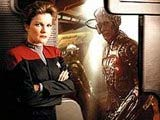
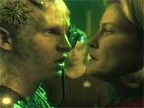
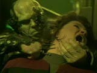
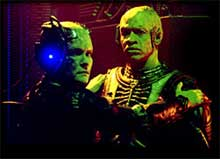

|

Clique aqui
para visitar o
Acervo de colunas

|

|
Borgs a bordo, parte II

 Janeway descobre que o cubo fora infectado por um vírus, responsável pela morte dos zangões adultos. Também toma conhecimento de que a tentativa das crianças em voltar aos Borgs é inútil, uma vez que a colméia as considera defeituosas e irrelevantes. Seven as convence a vir a bordo da Voyager para ajudá-las. O Doutor remove seus implantes cibernéticos e elas começam a retomar suas vidas. Na data estelar 54014.4, Seven of Nine vivencia o que pensa ser um sonho, mas descobre a existência da Unimatriz Zero - um lugar onde certos zangões vão durante seus ciclos de regeneração e podem existir como indivíduos. Vendo isso como uma oportunidade de destruir os borgs, a capitã Janeway fala para Seven contatar esses zangões. Lá ela encontra Axum, um antigo conhecido que a informa sobre a mutação recessiva que originou a Unimatriz Zero. Explica que a Rainha Borg está tentando localizar e destruir esse santuário e pede ajuda à capitã, que concorda em auxiliá-los na resistência.  A tripulação da Voyager desenvolve um vírus que permitiria a esses zangões mutantes manter sua individualidade após acordar do ciclo. Janeway, Tuvok e B'Elanna se transportam para uma nave Borg a fim de dispersar o vírus no plexo central --dispositivo que liga todos os zangões a bordo à Coletividade.O grupo avançado acaba assimilado e a Rainha tenta convencer Janeway a fazer os ocupantes da Unimatriz Zero se renderem. Ao final, o grupo é resgatado com sucesso, com a ajuda dos zangões (agora liberados), e uma guerra civil toma o lugar da estabilidade Borg...  Enfim, a presença desses seres cibernéticos em Voyager supera as séries anteriores. Trata-se de inúmeros conflitos dos quais Janeway sempre consegue se safar, com uma certa vantagem sobre a Coletividade. A própria USS Voyager utiliza tecnologia Borg.Essa nave, assim como sua tripulação, tornaram-se únicas no universo de Jornada. Representam a sobrevivência (característica primordial da natureza humana) e a capacidade de superar adversidades sem o "benefício" de uma mente coletiva. Daniel
Sasaki é co-editor do Trek
Brasilis |

 Na
data estelar 51978.2, a USS Voyager quase é destruída em uma
elaborada emboscada por Arturis, um alienígena que ajudava a
traduzir uma mensagem fragmentada, recebida da Frota Estelar. De
fato, ele planejava atrair a nave para o espaço Borg, onde seria
assimilada. Isso era uma vingança contra Janeway devido à aliança
temporária com a Coletividade na derrota da espécie 8472, que
possibilitara a assimilação do planeta de Arturis.
Na
data estelar 51978.2, a USS Voyager quase é destruída em uma
elaborada emboscada por Arturis, um alienígena que ajudava a
traduzir uma mensagem fragmentada, recebida da Frota Estelar. De
fato, ele planejava atrair a nave para o espaço Borg, onde seria
assimilada. Isso era uma vingança contra Janeway devido à aliança
temporária com a Coletividade na derrota da espécie 8472, que
possibilitara a assimilação do planeta de Arturis.